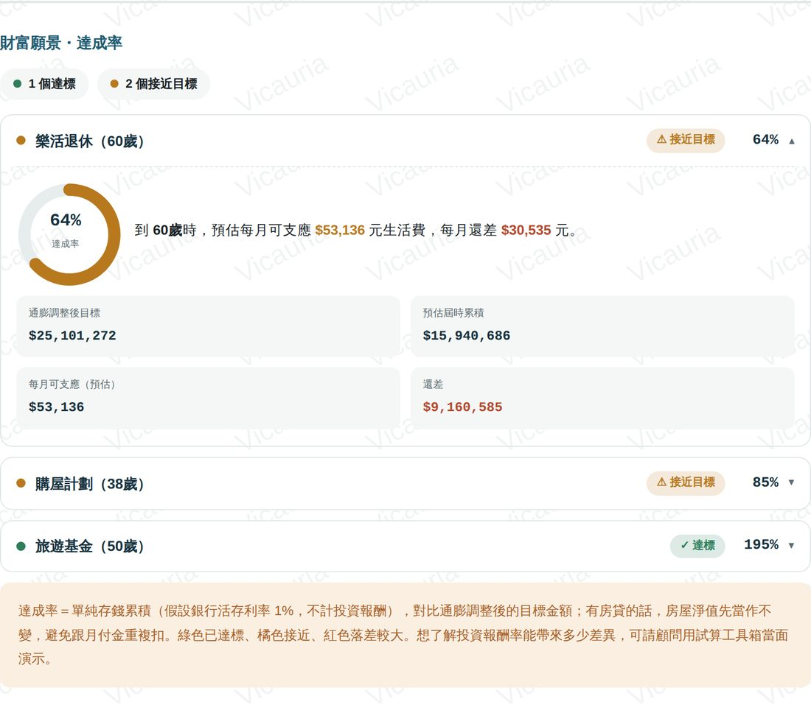
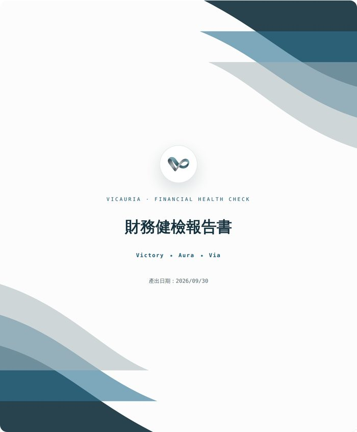
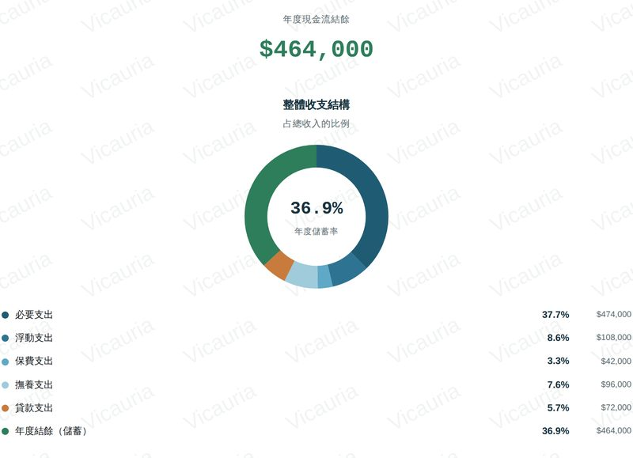
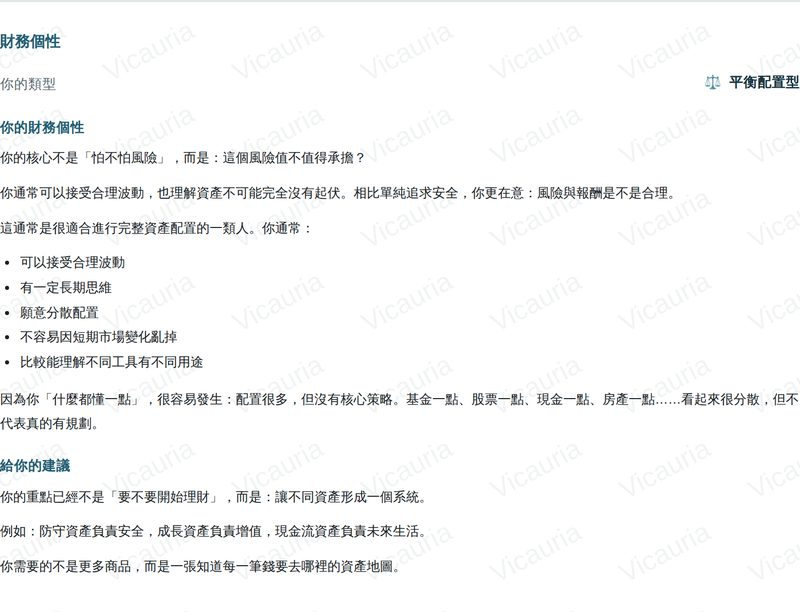
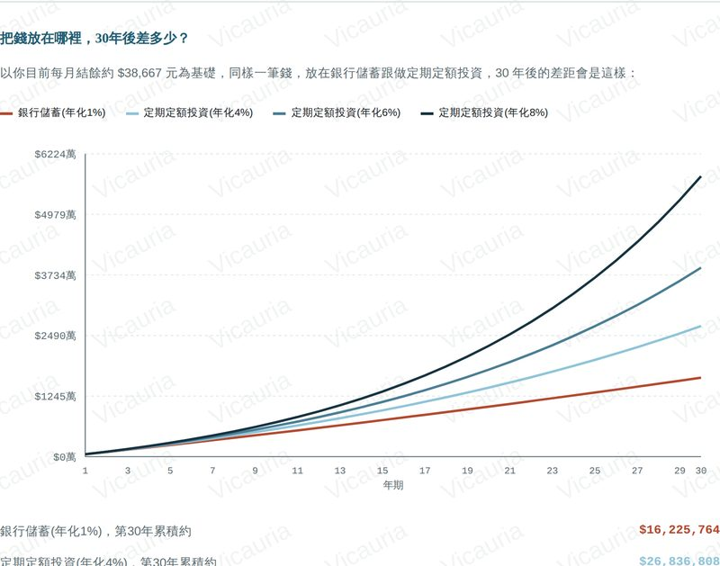

一套問卷引導你把面談聊深，結束時產出一份客戶看得懂的財務健檢報告——他會想約你下一次。從列名單到簽約追蹤，你的整套工作流程都在 Vicauria。
開始免費體驗 →

不是一堆數字，而是把他的錢、他的個性、他想要的生活，畫成一張地圖。可以直接存成 PDF 傳給客戶。



以上皆為報告實際畫面，數字為示意資料。點圖可以放大。
不用再在 Excel、LINE 記事本、行事曆之間來回切換。每一步的資料都會自動串到下一步。
把人脈分成 A／B／C，知道這週該先約誰。
名單管理行程、客戶生日、追蹤提醒都在同一個行事曆。
行事曆照著財富地圖問卷聊，新手也能把 case 聊深。
財富地圖一鍵產出客戶版報告，另有給你看的顧問版分析。
財務健檢報告設好下次聯絡日，到期自動提醒，也能前後比對。
客戶資料合約紀錄與每期繳費提醒，不漏掉任何一位客戶。
簽約管理想先試試看？這兩個小工具直接打開就能算，資料只在你的瀏覽器裡計算，不會送出。
本網站（含頁面設計、版面編排、程式碼、圖示、文案內容，以及各項試算工具之計算邏輯與公式呈現方式）為 Vicauria 之原創作品，受《著作權法》保護，著作權歸 Vicauria 所有。
未經 Vicauria 書面授權，任何人不得以任何方式複製、重製、反編譯、轉載、散布、公開傳輸本網站之全部或部分內容，或將本網站之設計、功能架構、試算邏輯用於開發其他商業服務或工具。違者將依法追究相關法律責任。
本網站所提供之各項試算工具（含但不限於退休基金、教育基金、購屋基金、房地合一稅、遺產稅、最低稅負制、勞保勞退等試算結果），僅供財務規劃參考與教育性用途，不構成任何投資建議、稅務建議或法律意見，亦非保險招攬或商品推薦。
試算結果為依使用者輸入資料與簡化假設所計算之估算值，可能與實際核定金額有所落差。實際稅額、給付金額、法定權利義務，仍應以國稅局、勞動部勞工保險局、地政機關等主管機關之核定，或合格會計師、律師、地政士之專業意見為準。
本網站使用者於工作台中登入後所建立之客戶資料，儲存於具存取權限控管之雲端資料庫，僅限該登入帳號本人存取，不會與其他使用者共用或公開。
為了改善服務，工作台會記錄各功能的使用次數與時間（例如「打開了哪個功能」），僅用於統計，不包含任何客戶姓名、問卷內容或財務數字。
Vicauria 保留隨時修改、暫停或終止本網站服務內容之權利，恕不另行個別通知。
Vicauria 目前所有功能全面免費開放使用，不需要綁定信用卡。未來如果推出付費方案，會提前公告，並另外說明收費與退款規則；詳細請見服務資訊與條款頁面。
任何帳號或使用上的問題，歡迎來信聯絡：jess818200228@gmail.com